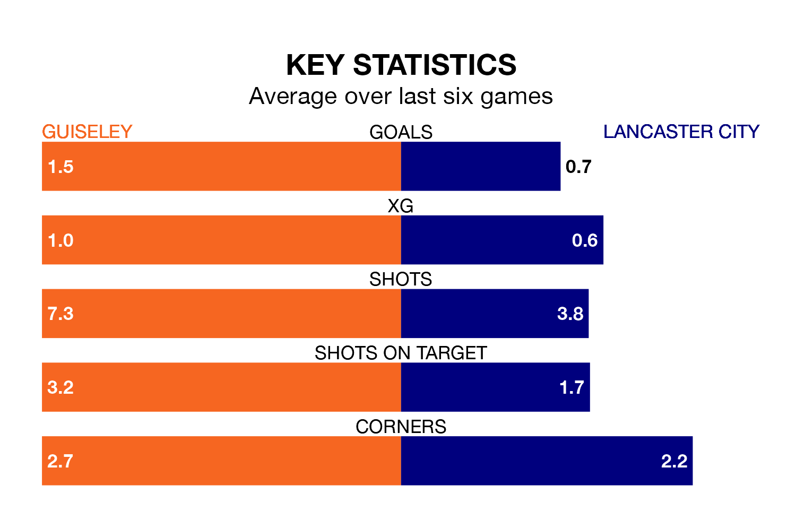

Lancaster City make the journey to Nethermoor Park to play Guiseley on Saturday looking to pick up points to end their three-game losing streak.
Lancaster's struggles have left them with five points from their last six Northern Premier League matches, while their opponents have earned nine from a possible 18.
With 46 goals in 34 games so far this season, Lancaster are scoring at below the league average rate with 1.4 goals per game. But they are conceding fewer than average too, letting in 47 goals at a rate of 1.4 per game.
Guiseley, meanwhile, are above average scorers, with 1.8 goals per game, compared to a league average of 1.6. They have conceded 1.5 goals per game.
The Lions are eighth in the table after 34 games, of which they have won 16 and drawn seven, earning 55 points.
City are three places behind the hosts in 11th, with 14 wins and eight draws putting them on 50 points.
In the last three years, Guiseley and Lancaster have played each other on three occasions. Lancaster won one of them and they drew the other.
Their last meeting was on August 26, when they played out a 2-2 draw.
Guiseley's last match was on March 23, a 2-1 loss against Ilkeston Town.
Lancaster lost 2-0 against Marine last time out, also on March 23.
Updated: 12:39 (UTC), 26/03/24